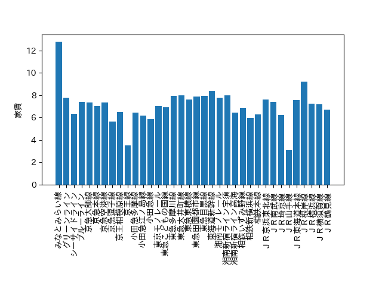
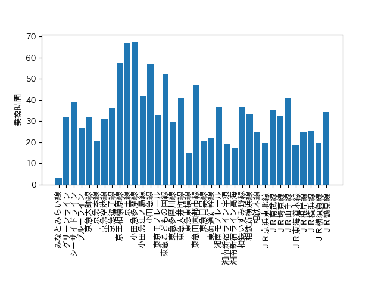
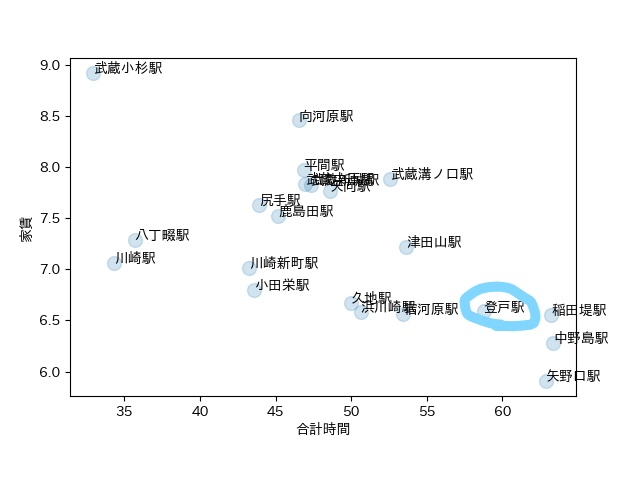

課題7:不動産屋になろう
ソースコード(無駄あり)
- import pandas as pd # データ分析に用いるライブラリ
- import matplotlib.pyplot as plt # グラフ表示に用いるライブラリ
- pd.set_option('display.unicode.east_asian_width', True) # 表示のずれを少し緩和
- plt.rcParams['font.family'] = 'IPAexGothic' # グラフ表示におけるフォントの指定
- data_path = "data.csv"
- df_data = pd.read_csv(data_path, encoding="utf-8-sig")
- print(df_data.sample(10))
- print(df_data.shape)
- print(df_data.columns)
- print(df_data.describe())
- print(df_data.sort_values(by="路線", ascending=True))
- print(df_data.groupby("路線").mean())
- print(df_data["乗換時間"].value_counts(sort=False))
- print(df_data["路線"].value_counts(sort=False))
- df_count = df_data["路線"].value_counts(sort=False)
- df_count.plot.line()
- plt.show()
- df_mean = df_data.groupby("路線").mean()
- x = df_mean.index
- y = df_mean.loc[:, "家賃"]
- plt.bar(x, y)
- plt.xlabel("")
- plt.ylabel("家賃")
- plt.xticks(rotation=90)
- plt.show()
- df_mean = df_data.groupby("路線").mean()
- x = df_mean.index
- y = df_mean.loc[:, "乗換時間"]
- plt.bar(x, y)
- plt.xlabel("")
- plt.ylabel("乗換時間")
- plt.xticks(rotation=90)
- plt.show()
- df_mean = df_data.groupby("路線").mean()
- x = df_mean.index
- y = df_mean.loc[:, "乗換時間"]
- plt.bar(x, y)
- plt.xlabel("")
- plt.ylabel("乗換時間")
- plt.xticks(rotation=90)
- plt.show()
- mask = df_data.loc[:, "路線"] == "ＪＲ東海道本線"
- x = df_data[mask].groupby("駅").mean().loc[:, "合計時間"]
- y = df_data[mask].groupby("駅").mean().loc[:, "家賃"]
- plt.scatter(x, y, s=100, alpha=0.2)
- for xx, yy, ss in zip(x, y, x.index):
- plt.text(xx, yy, ss)
- plt.xlabel("合計時間")
- plt.ylabel("家賃")
- plt.show()
- mask = df_data.loc[:, "路線"] == "小田急線"
- x = df_data[mask].groupby("駅").mean().loc[:, "合計時間"]
- y = df_data[mask].groupby("駅").mean().loc[:, "家賃"]
- plt.scatter(x, y, s=100, alpha=0.2)
- for xx, yy, ss in zip(x, y, x.index):
- plt.text(xx, yy, ss)
- plt.xlabel("合計時間")
- plt.ylabel("家賃")
- plt.show()
- mask = df_data.loc[:, "路線"] == "ＪＲ南武線"
- x = df_data[mask].groupby("駅").mean().loc[:, "合計時間"]
- y = df_data[mask].groupby("駅").mean().loc[:, "家賃"]
- plt.scatter(x, y, s=100, alpha=0.2)
- for xx, yy, ss in zip(x, y, x.index):
- plt.text(xx, yy, ss)
- plt.xlabel("合計時間")
- plt.ylabel("家賃")
- plt.show()
路線ごとの平均家賃や乗換時間を調べ、おすすめの駅を見つけることにした。
条件→家賃7万円以下、所要時間50分以内、2路線以上。

ここから路線を絞り、JR南武線にした。

南武線の各駅ごとの散布図を出してみた。これだけでは登戸駅がおすすめの駅だとは言い難い。
・小田急線が通っている(快速列車が止まる、行動範囲が広がる)
・東京都に近い(より賃金が高い所へ出稼ぎができる、新宿に行きやすい)
・ドラえもんの世界観がある。
・治安が良い→家族や女性の一人暮らしでも安心。
デザイン演習１・２トップページ
XBPトップページ